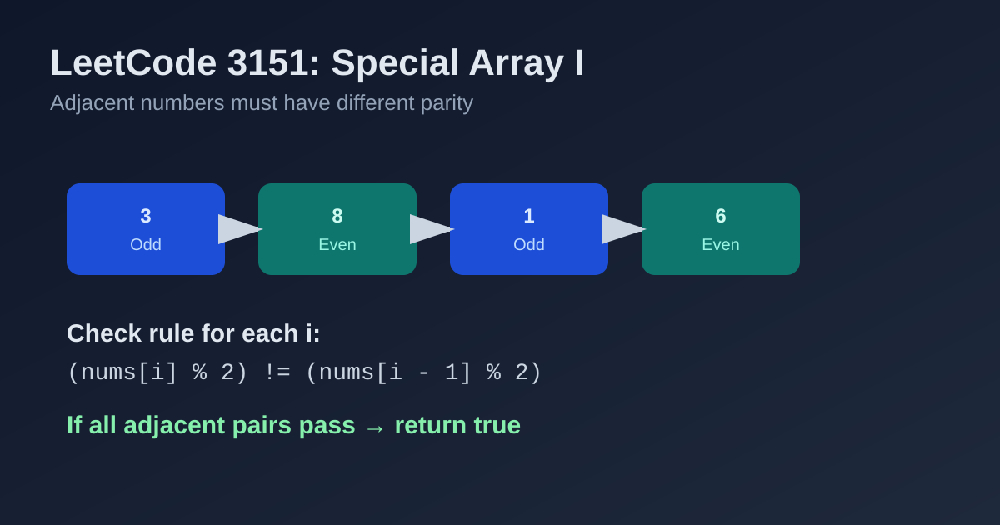

LeetCode 3151: Special Array I (Adjacent Parity Alternation Check)
LeetCode 3151ArrayParityOne PassToday we solve LeetCode 3151 - Special Array I.
Source: https://leetcode.com/problems/special-array-i/

English
Problem Summary
An array is special if every pair of adjacent numbers has different parity: one odd and the other even. Return true if the given array is special, otherwise return false.
Key Insight
The global condition is just a set of local checks: for each adjacent pair (nums[i-1], nums[i]), parity must differ. If one pair violates this, we can return immediately.
Brute Force and Limitations
A brute-force mindset might build a parity array first, then scan it. That works but uses extra space. We can compare parity directly in one pass.
Optimal Algorithm Steps
1) Start from i = 1.
2) Compare nums[i] % 2 and nums[i - 1] % 2.
3) If equal, return false immediately.
4) If all adjacent pairs differ, return true.
Complexity Analysis
Time: O(n).
Space: O(1).
Common Pitfalls
- Forgetting to handle arrays of length 1 (they are always special).
- Mixing up “value parity” and index parity (this problem is about value parity).
- Not early-returning when a bad adjacent pair is found.
Reference Implementations (Java / Go / C++ / Python / JavaScript)
class Solution {
public boolean isArraySpecial(int[] nums) {
for (int i = 1; i < nums.length; i++) {
if ((nums[i] & 1) == (nums[i - 1] & 1)) {
return false;
}
}
return true;
}
}func isArraySpecial(nums []int) bool {
for i := 1; i < len(nums); i++ {
if nums[i]%2 == nums[i-1]%2 {
return false
}
}
return true
}class Solution {
public:
bool isArraySpecial(vector<int>& nums) {
for (int i = 1; i < (int)nums.size(); i++) {
if ((nums[i] & 1) == (nums[i - 1] & 1)) {
return false;
}
}
return true;
}
};class Solution:
def isArraySpecial(self, nums: List[int]) -> bool:
for i in range(1, len(nums)):
if nums[i] % 2 == nums[i - 1] % 2:
return False
return Truevar isArraySpecial = function(nums) {
for (let i = 1; i < nums.length; i++) {
if ((nums[i] & 1) === (nums[i - 1] & 1)) {
return false;
}
}
return true;
};中文
题目概述
如果数组中每一对相邻元素的奇偶性都不同（一个奇数一个偶数），则称该数组是 special。给定数组 nums，判断它是否 special。
核心思路
整体条件可以分解为局部条件：逐个检查相邻元素是否“奇偶相反”。只要发现一对奇偶相同，就可以立刻返回 false。
暴力解法与不足
可以先构造一个奇偶数组再判断相邻项，但这会多占空间。直接在原数组上比较相邻元素奇偶性更简洁。
最优算法步骤
1）从 i = 1 开始遍历。
2）比较 nums[i] 与 nums[i-1] 的奇偶性。
3）若奇偶相同，立即返回 false。
4）遍历结束仍未冲突，返回 true。
复杂度分析
时间复杂度：O(n)。
空间复杂度：O(1)。
常见陷阱
- 忽略长度为 1 的情况（长度为 1 一定 special）。
- 把“下标奇偶”误当成“数值奇偶”（本题看的是数值奇偶）。
- 发现冲突后没有及时返回，导致多余计算。
多语言参考实现（Java / Go / C++ / Python / JavaScript）
class Solution {
public boolean isArraySpecial(int[] nums) {
for (int i = 1; i < nums.length; i++) {
if ((nums[i] & 1) == (nums[i - 1] & 1)) {
return false;
}
}
return true;
}
}func isArraySpecial(nums []int) bool {
for i := 1; i < len(nums); i++ {
if nums[i]%2 == nums[i-1]%2 {
return false
}
}
return true
}class Solution {
public:
bool isArraySpecial(vector<int>& nums) {
for (int i = 1; i < (int)nums.size(); i++) {
if ((nums[i] & 1) == (nums[i - 1] & 1)) {
return false;
}
}
return true;
}
};class Solution:
def isArraySpecial(self, nums: List[int]) -> bool:
for i in range(1, len(nums)):
if nums[i] % 2 == nums[i - 1] % 2:
return False
return Truevar isArraySpecial = function(nums) {
for (let i = 1; i < nums.length; i++) {
if ((nums[i] & 1) === (nums[i - 1] & 1)) {
return false;
}
}
return true;
};
Comments